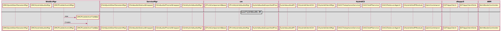

CMR4¶
Sequence for CSI¶
Sequence for Hybridaudio¶

User List of Hybirdaudio and audioclient
How PList show active speaking and how it retrieve active speaking info?
CSI of VOIP¶
- When CFW receive a CSI from CB Cache, how pass to WME ?

- When WME generate a new CSI, how pass to CFW
- Check point
CSmCSIMgr::UploadMyCSIInfoToCB Audio


Checkpoint¶
- Allocate cache request send out?
CSmCacheMgr::AllocacheHandle
- Cache subscribe success ?
CSmCacheMgr::OnNamehandleAllocateConfirm cacheName
- Subscribe request send out?
CSmCacheMgr::Subscribe
- Receive Cache data
CSmCSIMgr::CSmCacheMgr::HandleRetrieveData
- Video CSI conflict
CMmSVideoClient::NotifyCSItoCFW
- HybridFlag, CSmTelephonyMgr, CSmHybridAudioMgr
CConfCongextMgr::GetHybridFlag $HybridFlag
- CMR4 Flag
CConfContextMgr::GetCMRVersion >= 4 ($CMRVersion), CMRVersion (in webex.ini)
CSI Payload Format¶
- Format for Audio
- Format for Video
- Format for Sharing
- Webex new client will use the roster information to notify TS or TP Gateway whether it is a new client:
Test Case¶
Simple case
- Telephone
- Pure Phone ()
- WebEx Phone ()
- CMR4 Phone ()
VOIP
Spark
Composite case
- Telephone + VOIP
- Telephone + Spark
- VOIP + Spark
- Telephone + VOIP + Spark
Repo¶
- webex-conference-mgr
- webex-framework-reskin
- webex-windows-mc
- webex-mmp-sdk
- webex-windows-hybridaudio ??
WIKI¶
http://wikicentral.cisco.com/display/PROJECT/T31R2+CMR+4+Main+Wiki
- UE for client side
- UE for page side
- TIMS
- http://tims.cisco.com/
- WebEx
- Project => Select Project => Browse All Projects => T31R2 => Click OK
Test Env¶
http://gohm.qa.webex.com/ admin/Aa1234
- Test site for Active Speaker & Multi-Streaming
- Account: lizzy/P@ss1234Please use my admin to create your own site.
- From Hilary Liu
- Account: con/P@ss1234
SparkSetup.msi \10.224.188.12csg-hgh-VSCM-VanorisQiuJinSparkSetup.msi
- DMZ site
sqdemo4.dmz.webex.com (admin/P@ss1234)
- @2016-04-11
freepbx Media Server, X-Lite
X-Lite¶
- Account name: 3070
- User ID: 3070
- Domain: 10.224.188.16
- Password: 3070
- Display name: 3070
- Authorization name: 3070
How to join the TP-GATEWAY¶
Use Chrome browser: In the settings -> extension -> get more extension download the DHC rest client and install
First API is http: 10.224.194.145/sparkgateway/api/v1/conference use the POST
In the request fill: HTTP://10.224.194.145/sparkgateway/api/v1/conference
- In the header fill:
- Content-Type: application/json
- Cisco-Locus-ID: sssss
- TrackingID: sssss
In the body fill:
{ "conferenceId":"4278337500_8612", "callbackURL":"https://hecate11-a.wbx2.com/hecate/api/v1/sgw_conferences/4278337500_8612" } Replace "4278337500" with the real "confid"
Click Send
Second API is 10.224.194.145:80/sparkgateway/api/v1/conference/4278337500_8612/participant with PUT
Body content fill with:
{ "url":"https://locus-a.wbx2.com/locus/api/v1/loci/f3201b2d-322d-3c07-a7c1-96ae4daf04d1", "created":"2015-05-27T20:14:27.416Z", "info":{"topic":"","maxParticipants":25,"webExMeetingId":4278343850}, "host":{"id":"3269f390-b389-456e-920e-1ecd9b0a2bb0","email":"lvtang@cisco.com","name":"Elton Tang (lvtang)"}, "fullState":{"active":true,"count":1,"locked":false,"lastActive":"2015-07-21T06:56:46.638Z"}, "participants":[ { "isCreator":false, "id":"692fcecc-0752-3cf0-b400-74061cd577d4", "url":"https://locus-a.wbx2.com/locus/api/v1/loci/f3201b2d-322d-3c07-a7c1-96ae4daf04d1/participant/692fcecc-0752-3cf0-b400-74061cd577d4", "state":"JOINED", "type":"RESOURCE_ROOM", "person":{"id":"692fcecc-0752-3cf0-b400-74061cd577d4","email":"20TmDd2vSGRGeso03fzbL1iA@ss4.webex.com","name":"DummyTandberg","sipUrl":"sip:20TmDd2vSGRGeso03fzbL1iA@ss4.webex.com"}, "devices":[{"url":"https://l2sip-cfa-web.wbx2.com/l2sip/api/v1/calls/6ecd58cfa5240da4ecbc65a9efeaa500@67.23.43.22/10.181.6.178","deviceType":"SIP","featureToggles":{}}], "status":{"audioStatus":"RECVONLY","videoStatus":"RECVONLY","csis":[3169012481]}, "deviceUrl":"https://l2sip-cfa-web.wbx2.com/l2sip/api/v1/calls/6ecd58cfa5240da4ecbc65a9efeaa500@67.23.43.22/10.181.6.178","guest":false}], "replaces":[], "sequence":{"entries":[5],"rangeStart":0,"rangeEnd":0} }
Replace “4278337500” with the real “confid”
Click Send
- Leave meeting
The API is 10.224.194.145:80/sparkgateway/api/v1/conference/4278337500_8612/participant with PUT
Body content fill with:
{ "url":"https://locus-a.wbx2.com/locus/api/v1/loci/f3201b2d-322d-3c07-a7c1-96ae4daf04d1", "created":"2015-05-27T20:14:27.416Z", "info":{"topic":"","maxParticipants":25,"webExMeetingId":4278343850}, "host":{"id":"3269f390-b389-456e-920e-1ecd9b0a2bb0","email":"lvtang@cisco.com","name":"Elton Tang (lvtang)"}, "fullState":{"active":true,"count":1,"locked":false,"lastActive":"2015-07-21T06:56:46.638Z"}, "participants":[ { "isCreator":false, "id":"692fcecc-0752-3cf0-b400-74061cd577d4", "url":"https://locus-a.wbx2.com/locus/api/v1/loci/f3201b2d-322d-3c07-a7c1-96ae4daf04d1/participant/692fcecc-0752-3cf0-b400-74061cd577d4", "state":"LEFT", "type":"RESOURCE_ROOM", "person":{"id":"692fcecc-0752-3cf0-b400-74061cd577d4","email":"20TmDd2vSGRGeso03fzbL1iA@ss4.webex.com","name":"DummyTandberg","sipUrl":"sip:20TmDd2vSGRGeso03fzbL1iA@ss4.webex.com"}, "devices":[{"url":"https://l2sip-cfa-web.wbx2.com/l2sip/api/v1/calls/6ecd58cfa5240da4ecbc65a9efeaa500@67.23.43.22/10.181.6.178","deviceType":"SIP","featureToggles":{}}], "status":{"audioStatus":"RECVONLY","videoStatus":"RECVONLY","csis":[3169012481]}, "deviceUrl":"https://l2sip-cfa-web.wbx2.com/l2sip/api/v1/calls/6ecd58cfa5240da4ecbc65a9efeaa500@67.23.43.22/10.181.6.178","guest":false}], "replaces":[], "sequence":{"entries":[5],"rangeStart":0,"rangeEnd":0} }
Replace “4278337500” with the real “confid”
Click Send
VS Optimization¶
- Optimization: Disabled
- Whole Programe Optimization: Disabled
- Link Time Code Generation: Use Link Time Code Generation (LTCG)
Build Dependency¶
How to build MMP_SDK¶
- Locate to webex-mmp-sdk/src/westlake/src
- Build MediaConf_12_pre
- Build MediaConf_12_post
- Rename macdol.dll to mac.dll
- Audio Project name : mmaudioClientDol
Component dependency¶
- When the CMRClientVersion ready ?
- When can receive CSI from cache ?
- MMP
TP Callback¶
- CAtConfAgent::CallTPDeviceByCB
- CSmDefUserMgr2::OnAddUser TPUserType[4]
Daily Work¶
- 2016-03-23
- F1448 UI Spec review: Thumbnail active speaker display order rules
- Video group first: at the same group, join meeting time
- Avatar Video group second: at the same group, join meeting time
- Video group : need record how long time hadn’t speak
- What’s the group definition?
- Order by join meeting sequence or Name sequence?
F1448 UI Spec review: Thumbnail hover
- 2016-04-22
- Show Audio Connection dialog callflow
- Click Call Using Computer
- Show Connecting ... dialog
- Show Connected dialog
- 2016-05-03
- CMCPListActiveTalkBar::DoPaintSpeaking
ToDo List¶
- Define interface how to pass CSI to serviceMgr when receive remote CSI
- Merge CMR4 relevant code from F1457 to feature/multistream branch of webex-windows-hybridaudio
- For Mac, create multistream branch, and merge relevant code, fix build issue
- How MMP SDK handle <CSI_ACTION_ADD> <CSI_ACTION_REMOVE> <CSI_ACTION_MODIFY>
- ???? TSP
- 中文OS+ English region + 中文User VS 英文OS + 中文region + 中文user